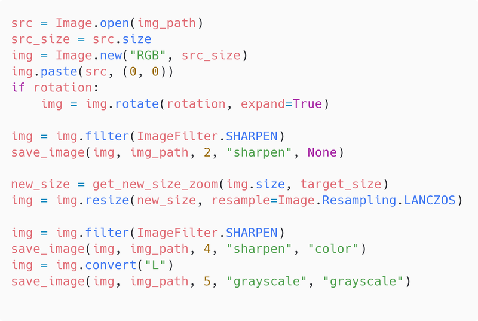

Make sharpened color and grayscale versions
Used a Python script to create two versions of the original image, both sharpened and scaled, and one converted to grayscale. The script read the list of images from a .csv file and applied the following to each row (some interim steps skipped):
